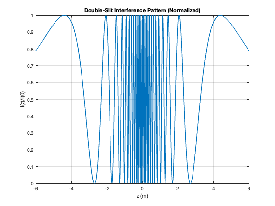

% ECE 235 % Homework 3 % % Sidorian Pandovski % % Problem 3: % In a double-slit experiment with light, as described in class, an % interference pattern forms on the screen. Assume the distance from the % slits to the screen is L=1 m, the slits are separated by d=8 microns, and % the wavelength of light falling on the slits is Lambda = 600 nm. % a) plot the intensity of light at the screen as a function of position % along the screen. normalize the intensity at each point to the intensity % of light at the center of the screen (z = 0) or % I(Z)/I(0) = cos^2(k(r_2 - r_1)/2) % Given lambda = 600E-9; L = 1; d = 8E-6; % Derived k = 2*pi/lambda; h = 6.626E-34; z = -6:1E-6:6; r1 = sqrt(L^2 + (z-d/2).^2); r2 = sqrt(L^2 + (z+d/2).^2); I = cos((k*(r1-r2))/2).^2; figure; plot(z, I, 'LineWidth', 1.5); grid on; xlabel('z (m)'); ylabel('I(z)/I(0)'); title('Double-Slit Interference Pattern (Normalized)'); % b) how many bright spots can one see on the screen? bright = 1+2*floor(d/lambda) % c) angle of theta at which the last peak can be seen? mmax = floor(d/lambda); theta_max_deg = asind(mmax*lambda/d) % d) Dz = lambda*L/d; m = 0:5; zmax = m*lambda*L/d; disp([m.' zmax.'])
bright =
27
theta_max_deg =
77.1614
0 0
1.0000 0.0750
2.0000 0.1500
3.0000 0.2250
4.0000 0.3000
5.0000 0.3750
